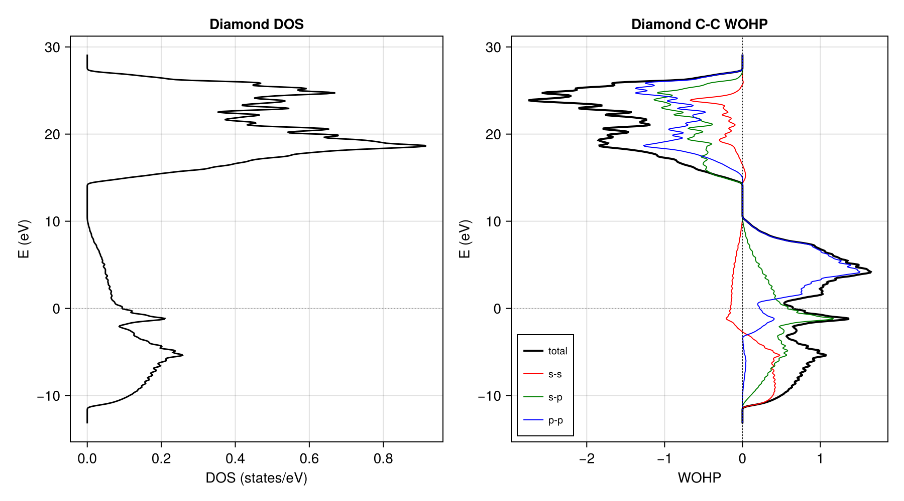
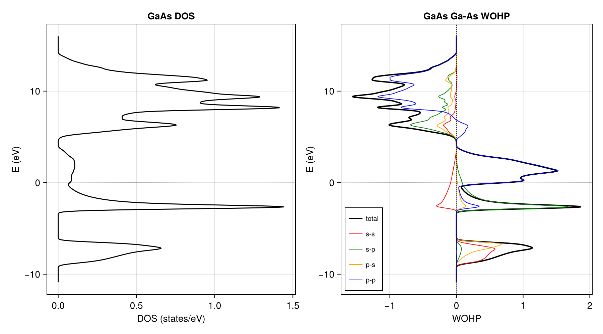
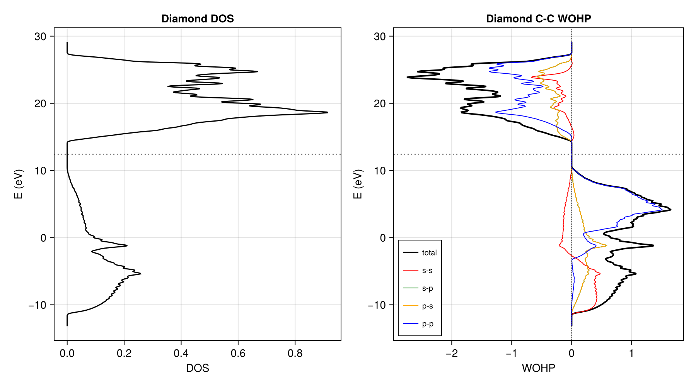

Examples
Diamond — Wannier90 route
Minimal example using only CrystalBonds.jl. Reads a pre-computed diamond_hr.dat file (2 C atoms, sp3, 8 Wannier functions) and computes WOHP on a 30x30x30 k-mesh.
- Left: total DOS from WOOP
- Right: C-C bond WOHP with orbital decomposition (s-s, s-p, p-p)

Bonding (positive WOHP) dominates below the band gap, antibonding (negative) above. The p-p contribution is the largest. IpCOHP is evaluated at the mid-gap energy.
GaAs — Wannier90 route
GaAs with HGH pseudopotentials (isolated s-p bands, no disentanglement needed). Orbital decomposition shows the heteropolar nature of the Ga-As bond: s-p and p-s contributions are distinct due to different atomic character.

Diamond — DFTK.jl + Wannier.jl pipeline
examples/210_diamond_dftk_pbe.jl
Full DFT-to-WOHP pipeline in Julia:
- DFT calculation with DFTK.jl (PBE, 8x8x8 k-grid, Ecut=30 Ha)
- Wannierization with Wannier.jl
- Build tight-binding Hamiltonian $H(\mathbf{R})$
- Interpolate to fine k-mesh and compute WOHP with CrystalBonds.jl

In this example, the Fermi energy from the DFT calculation (scfres.εF) is used directly for IpCOHP integration.
Requires additional packages:
using Pkg
Pkg.add(["DFTK", "PseudoPotentialData", "Wannier", "CairoMakie"])Running examples
From the CrystalBonds.jl root directory:
julia --project=. examples/110_diamond_w90.jlSee examples/000examples.md for the naming convention and full list.
CrystalBonds.jl does not shift the energy axis. The energy scale depends on the input _hr.dat file. See Theory — Energy unit and origin for details.